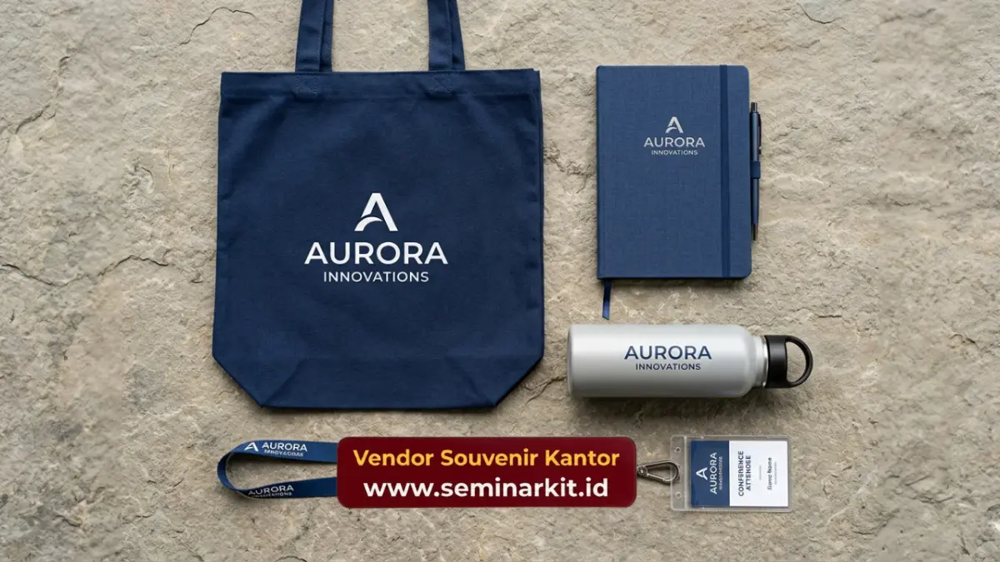

List perlengkapan acara seminar mencakup perangkat teknis, dekorasi ruangan, dokumen peserta, hingga seminar kit seperti tas, notebook, dan tumbler custom logo dari vendorsouvenirkantor.web.id.
Setiap komponen ini menentukan kelancaran acara sekaligus kesan profesional yang diterima peserta maupun tamu undangan.
Panitia yang menyiapkan list secara sistematis dapat menghemat waktu persiapan hingga separuh dari total waktu biasanya, sekaligus menghindari kekurangan perlengkapan di hari H.
- Perlengkapan acara seminar terbagi tiga kategori utama: teknis, administrasi, dan seminar kit peserta.
- Seminar kit custom logo menjadi elemen yang paling sering menentukan kesan profesional sebuah acara.
- Budget seminar kit umumnya berkisar puluhan ribu hingga ratusan ribu rupiah per peserta, tergantung jenis barang dan kuantitas pemesanan.
- vendorsouvenirkantor.web.id menyediakan seminar kit custom logo satu pintu, dari tas hingga tumbler, untuk mempercepat persiapan acara.
Apa Saja Perlengkapan Acara Seminar yang Wajib Disiapkan Panitia?
Perlengkapan acara seminar yang wajib disiapkan panitia mencakup perangkat audio visual, dekorasi ruangan, dokumen registrasi, konsumsi, serta seminar kit untuk setiap peserta yang hadir.
Kelalaian pada salah satu kategori ini berisiko mengganggu jalannya acara dan menurunkan kepuasan peserta.
Secara garis besar, panitia perlu memetakan kebutuhan ke dalam tiga kelompok besar agar checklist lebih mudah dipantau. Kelompok pertama adalah perlengkapan teknis yang menopang jalannya presentasi.
Kelompok kedua adalah dokumen dan administrasi yang menjamin kelancaran registrasi. Kelompok ketiga, yang paling berdampak pada persepsi peserta terhadap penyelenggara, adalah seminar kit dan souvenir yang dibagikan langsung kepada tamu.
Perlengkapan Teknis dan Dekorasi Ruangan Seminar
Perlengkapan teknis dan dekorasi ruangan seminar meliputi sound system, proyektor, layar presentasi, mikrofon, backdrop, serta penataan meja dan kursi sesuai kapasitas peserta yang diundang. Semua elemen ini membentuk fondasi kenyamanan acara sebelum sesi materi dimulai.
Sound system dan mikrofon nirkabel menjadi prioritas utama karena kualitas audio yang buruk dapat mengurangi fokus peserta terhadap materi seminar.
Proyektor dengan resolusi memadai serta layar berukuran proporsional terhadap luas ruangan juga wajib dipastikan berfungsi baik sebelum acara dimulai.
Backdrop dan dekorasi panggung berperan sebagai identitas visual acara sekaligus latar dokumentasi.
Banyak instansi kini menambahkan elemen branding perusahaan pada backdrop agar konsisten dengan tema korporat yang diusung, termasuk warna dan logo yang senada dengan seminar kit yang dibagikan kepada peserta.
Penataan kursi turut memengaruhi kenyamanan selama sesi berlangsung, terutama untuk seminar berdurasi panjang. Model classroom cocok untuk seminar dengan sesi pencatatan intensif, sementara model theatre lebih efisien untuk seminar singkat berformat presentasi satu arah.

Dokumen dan Administrasi Peserta Seminar
Dokumen dan administrasi peserta seminar mencakup formulir registrasi, daftar hadir, sertifikat, id card, serta materi cetak yang dibagikan sebelum atau selama sesi berlangsung. Kelengkapan dokumen ini memastikan proses pencatatan kehadiran berjalan tertib dan akurat.
Id card atau name tag peserta sebaiknya sudah dicetak sebelum hari acara untuk mempercepat proses registrasi di meja penerimaan tamu. Beberapa instansi memilih id card holder custom logo yang kemudian dimasukkan ke dalam seminar kit sebagai satu kesatuan perlengkapan peserta.
Sertifikat kehadiran menjadi dokumen yang tidak kalah penting, khususnya untuk seminar yang terkait pengembangan kompetensi profesional.
Materi cetak seperti modul atau ringkasan presentasi juga sebaiknya disiapkan dalam jumlah sesuai estimasi kehadiran, ditambah cadangan sekitar sepuluh persen.
Apa Itu Seminar Kit dan Mengapa Penting untuk Peserta Seminar?
Seminar kit adalah kumpulan perlengkapan yang dibagikan kepada peserta seminar, umumnya berisi tas, notebook, pulpen, dan tumbler dengan logo instansi penyelenggara tercetak pada setiap itemnya.
Seminar kit penting karena menjadi representasi konkret dari kualitas penyelenggaraan acara sekaligus media branding yang terus digunakan peserta setelah acara selesai.
Berbeda dari souvenir umum, seminar kit dirancang agar fungsional selama sesi berlangsung. Tas seminar digunakan untuk membawa materi dan barang bawaan lain, notebook dan pulpen digunakan untuk mencatat poin penting presentasi.
Sementara tumbler menjaga peserta tetap terhidrasi sepanjang sesi. Fungsi ganda inilah yang membuat seminar kit lebih efektif dibanding souvenir dekoratif semata.
Isi Seminar Kit Custom Logo yang Paling Diminati Perusahaan
Isi seminar kit custom logo yang paling diminati perusahaan umumnya terdiri dari tas jinjing atau tote bag, notebook custom cover, pulpen branding, tumbler atau botol minum.
Serta id card holder dengan tali lanyard senada tema acara. Kombinasi ini dipilih karena mencakup kebutuhan fungsional peserta selama dan setelah acara.
Tote bag berbahan kanvas atau spunbond menjadi pilihan populer karena ringan dan mudah dicetak logo dengan teknik sablon maupun bordir.
Notebook dengan cover custom memberikan kesan premium tanpa menambah beban biaya signifikan, sementara pulpen branding tetap menjadi item wajib karena tingkat penggunaannya yang tinggi selama sesi berlangsung.
Tumbler custom logo semakin diminati dalam beberapa tahun terakhir seiring meningkatnya kesadaran terhadap pengurangan sampah plastik pada acara-acara instansi pemerintah maupun korporat.
Selain fungsional, tumbler juga memberikan ruang branding yang luas dan tahan lama dibanding item kertas.
Perusahaan yang ingin melengkapi seluruh kebutuhan seminar kit ini dalam satu kali pemesanan dapat mengunjungi vendorsouvenirkantor.web.id, yang menyediakan paket seminar kit custom logo lengkap sesuai tema dan anggaran acara.
Berapa Budget Ideal untuk Perlengkapan Souvenir Seminar Korporat?
Budget ideal untuk perlengkapan souvenir seminar korporat umumnya berkisar dari puluhan ribu rupiah untuk paket sederhana hingga ratusan ribu rupiah per peserta untuk paket lengkap dengan tas, notebook, pulpen, dan tumbler custom logo.
Besaran ini sangat bergantung pada jumlah peserta, jenis bahan, dan kompleksitas cetak logo yang diinginkan.
Semakin banyak jumlah peserta yang dipesan dalam satu batch produksi, umumnya semakin efisien pula harga satuan per itemnya karena biaya setup cetak dapat dibagi rata.
Oleh karena itu, penting bagi panitia untuk melakukan estimasi jumlah peserta secara realistis di awal perencanaan agar anggaran seminar kit dapat dialokasikan secara efisien.
Selain jumlah, jenis bahan turut memengaruhi total anggaran. Tas berbahan kanvas premium dan tumbler stainless umumnya memiliki harga satuan lebih tinggi dibanding tas spunbond atau tumbler plastik, namun menawarkan daya tahan dan kesan eksklusif yang lebih kuat, cocok untuk seminar dengan target audiens level manajemen atau mitra strategis.
Tim vendorsouvenirkantor.web.id dapat membantu menyesuaikan komposisi item seminar kit dengan anggaran yang tersedia, sehingga panitia tetap mendapatkan hasil maksimal tanpa melebihi alokasi biaya yang sudah ditetapkan.
Bagaimana Cara Memesan Seminar Kit dan Souvenir Seminar di Vendor Souvenir Kantor?
Cara memesan seminar kit dan souvenir seminar di vendorsouvenirkantor.web.id dimulai dengan mengonfirmasi jumlah peserta, jenis item yang diinginkan, serta desain logo yang akan dicetak pada setiap perlengkapan. Proses ini dirancang agar panitia dapat memperoleh estimasi harga dan waktu produksi dengan cepat.
Setelah kebutuhan dikonfirmasi, tim produksi akan menyiapkan desain mock up sebagai acuan sebelum proses cetak massal dilakukan.
Tahap ini penting untuk memastikan penempatan logo, warna, dan tata letak sudah sesuai dengan identitas visual instansi sebelum seminar kit diproduksi dalam jumlah besar.
Bagi instansi atau perusahaan yang memiliki agenda seminar rutin, memesan lebih awal sangat disarankan agar jadwal produksi seminar kit tidak berbenturan dengan tanggal pelaksanaan acara.
Kunjungi vendorsouvenirkantor.web.id sekarang untuk berkonsultasi mengenai kebutuhan seminar kit acara Anda dan dapatkan penawaran sesuai jumlah peserta serta anggaran yang tersedia.
Menyusun list perlengkapan acara seminar secara terstruktur, mulai dari perangkat teknis hingga seminar kit peserta, adalah kunci utama kelancaran dan kesan profesional sebuah acara.
Seminar kit custom logo khususnya berperan besar dalam membangun citra institusi di mata peserta maupun mitra bisnis.
Segera konsultasikan kebutuhan seminar kit acara Anda bersama vendorsouvenirkantor.web.id untuk mendapatkan paket lengkap sesuai anggaran dan jadwal acara.

Banner promosi: klik gambar untuk langsung terhubung ke WhatsApp tim sales.